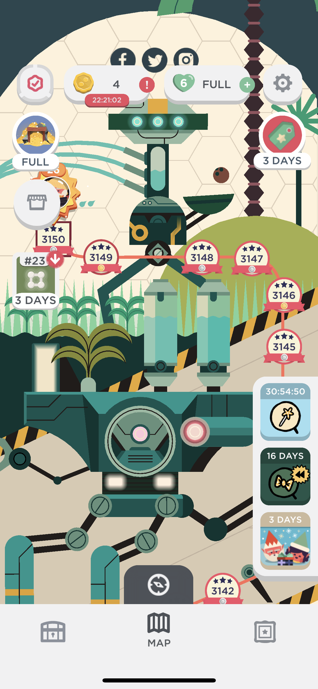

2020年の振り返り
WFH になり、仕事や生活様式が劇的に変化した 1 年だった。変化に強いものが生き残るということを体感した。
メルペイ
入社してから約 2 年半経った。過去に正社員で働いた会社の中では最長となっている。振り返ると入社してから 2020 年に入るまではメルペイリリース前後のバタバタであまり余裕がなかった。今年はメンバーが増えたおかげでこれまでやりたかったけどできなかったことができるようになった。
- 1 月
- 英語ネイティブと一緒に仕事するようになった (業務で英語を使うときの準備と実践ログ)
- 2 月 〜 3 月
- 2 末からフルリモートワークが続いている。結局 2 回だけしかオフィスに出社していない。
- 2 月にも 1 人外国籍メンバーが増え、さらに Origami のメンバーもジョインしチームメンバーが一気に増えた
- オンボーディングやコンポーネントリニューアルを担当した
- 4 月 〜 7 月
- マイナンバーポイントキャンペーンの開発に関わった
- 8 月 〜 現在
- Engineering Division でリグレッションテストの自動化をしていくことになった
- 自分は Frontend 領域のオーナーとして取り組んだ (Cypress + TestRail による Frontend E2E テストの効率化について)
- 10 月からは Engineering Manager をやっている。完全にコードを書かなくなったわけではなく、50% マネジメント・50% プロダクト開発という割合でやっている
Proff
- ECS/Fargate に移行した
- E2E テストを整備し、Renovate の更新を半自動でできるようにした
- その他、細かい改修をいくつかやった
衣食住
- WFH が主となり家にいる時間が圧倒的に増えた
- 前半は Life From Home で書いた
- 散歩は継続している
- 9 月に引っ越しをして環境を整えた (2020 年買ってよかったもの)
禁酒と健康
禁酒
お腹に違和感があり、3 ヶ月間禁酒していた。お腹が鳴っている感覚が半月ほど続いており、念の為診察をした。エコー検査、レントゲン検査は異常なし、血液検査をしたところ膵臓に関わる数値が基準値をやや超えていた。「軽度の膵炎」という診断結果で、3 ヶ月お酒を控えて様子見となった。
お酒は週に数回程度、晩ごはん食べるときに一緒に飲む程度だった。大量に飲んで酔っ払うということはほぼなくなっていた。いざ禁酒してみると案外なんとかなった。外食のときは飲みたくなるときはあった。
結局、お酒は関係なかった。ちょうど引っ越しをしたので再検査は別の病院にした。基準値をやや超えていたのも体質であろうという見解になった。この数値ならそこまで大げさなものではなく、ほぼ個人差という診察であった。セカンドオピニオンは大事だと感じた。
健康
禁酒期間は自分の健康を見直すいい機会となった。体組成計 (Oura Ring) で日常の生活習慣を可視化するようにしたり、スタンディングデスクを購入したり、栄養や食品のことを勉強するようになった (栄養チャンネルみてる)。Oura Ring は奥さんと一緒にはじめた。二人の数値を比べられて面白い。
ゲーム
TWO DOTS が再燃した。半年かけて最新の 3150 ステージまで追いついた(ツラい)。
結局、PS 5 は未だに購入できていない。あつもりは廃人になるのがわかっていたので自重した。
スマホゲーム
Switch
- ゼルダの伝説 夢をみる島
- ポケットモンスター ソード・シールド
- スーパーマリオ 3Dコレクション
- FINAL FANTASY IX
- 桃太郎電鉄 ~昭和 平成 令和も定番!

あつもり、完クリした！ #ゼルダの伝説 #夢をみる島 #NintendoSwitch pic.twitter.com/6CUUaJwypl
— tanakaworld 🧢 (@_tanakaworld) April 4, 2020
全物件制覇！ #桃鉄令和 #桃鉄 pic.twitter.com/jLRTjcm9fF
— tanakaworld 🧢 (@_tanakaworld) December 6, 2020
旅行
COVID-19 の影響で海外旅行は行けなかった。GoTo Travel で青森に行った。
- 1月: 愛知 (帰省)
- 11月: 青森
YouTube
地上波のテレビ番組を完全に観なくなった。代わりに YouTube を観ている。オンデマンドにいつでも好きなものを観れるのと、再生速度を変更できて字幕やスキップもできるなど機能的にもよい。単純にテレビは面白くないのと、ニュース番組でさえ観る価値がわからなくなった。
料理系 YouTuber を真似して実践するようになった 1 年だった。我が家では寝る前に YouTube を観ることを「夜食」と呼んでいる。きまぐれクック や 谷やん を寝る前の空腹しのぎとして観ていたのがその由来で、夜食は食べるものではなく観るものになった。夜食の中で食べたいものや料理したいものを奥さんと共有している YouTube リストに登録し、「何が食べたい？」となったらそこから選択するというルーティンが板についた。
料理関係ないけど、宋世羅の羅針盤ちゃんねる にもハマった。
2021 年
30 歳になったので健康にも気をつかいつつ、適度にやっていきをやっていこうと思う。